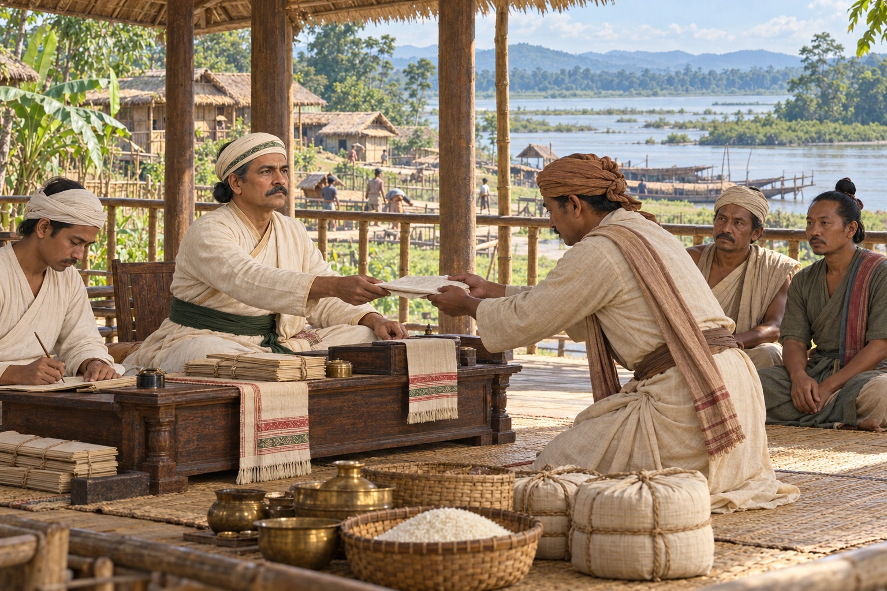

Matak Autonomy: Sarbananda Made Barsenapati
1805 · The Moamoria risings

After a stalemate at Bengmara, Purnananda Burhagohain recognises Sarbananda as Barsenapati of an autonomous Matak rajya paying annual tribute. The Moamoria rebellion ends.
An envoy-mediated interpretation of the autonomy agreement, conventionally dated 1805. Exact participants and ceremony are not established; sources differ on Sarbananda/Matibar succession and settlement chronology.
People: Sarbananda Singha, Purnananda Burhagohain
Open this scene in the interactive archive · Follow this event on MAP